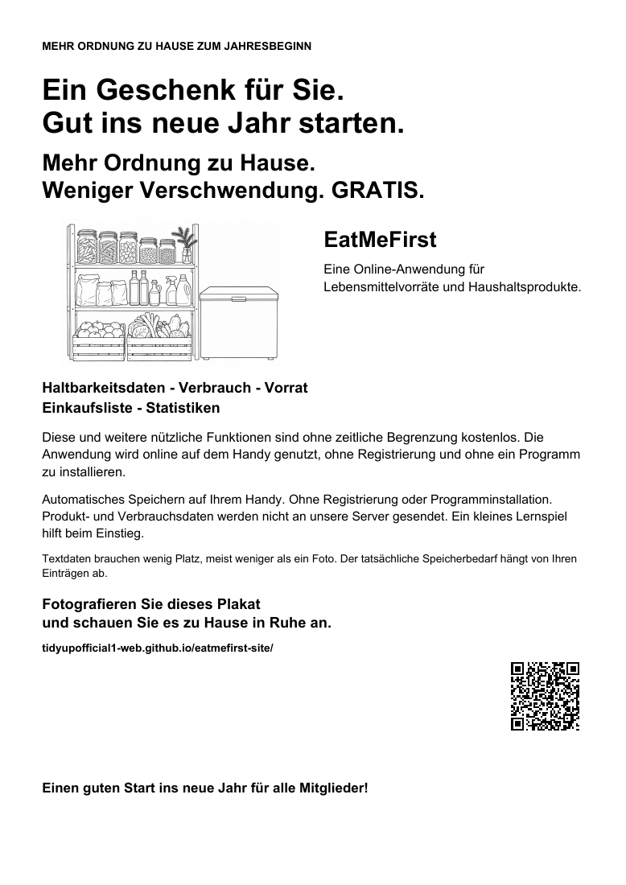
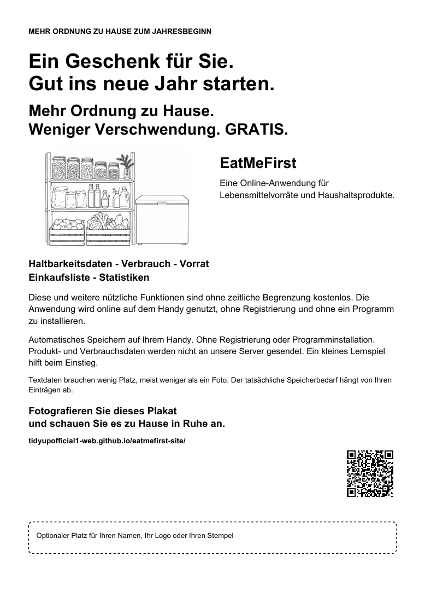
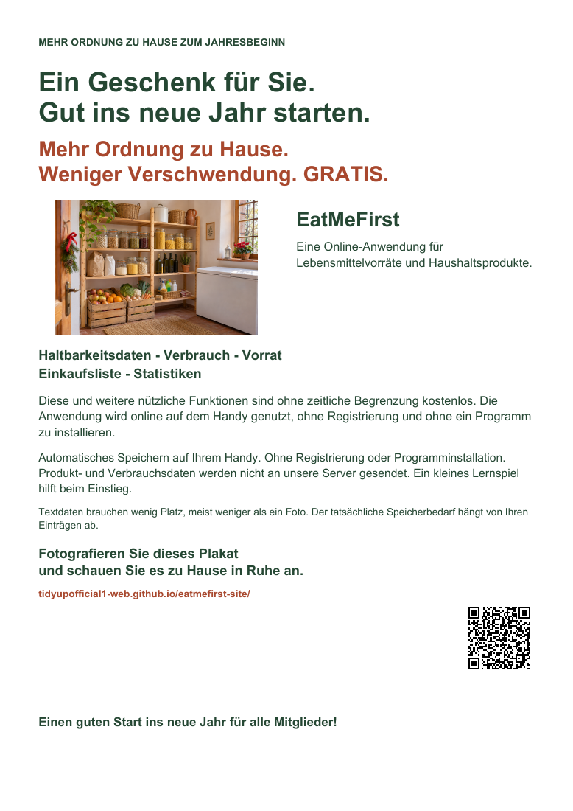

Ein Gruß zum Jahresbeginn, fertig zum Teilen.
Foto und Zeichnung zeigen Haushaltsvorräte, Obstkisten und eine Gefriertruhe. Drucken Sie ein Plakat für die Abholstelle oder teilen Sie ein Bild auf Ihrer Website.
Vierseitiges A4-PDF herunterladenDas PDF enthält alle vier Varianten. Wählen Sie beim Drucken nur die gewünschte Seite aus.

Schwarz-Weiß - Platz für Ihr Logo
Dieses Bild herunterladen
Farbe - ohne Logo
Dieses Bild herunterladenFarbe - Platz für Ihr Logo
Dieses Bild herunterladenEine Mitteilung für Ihre Mitglieder
Text herunterladenDiese Seite versendet keine Nachrichten. Sie wählen den Kanal und die Empfänger selbst.
Beginnen Sie auf dem Handy
EatMeFirst lässt sich auch auf dem Handybildschirm gut lesen. Mit der Kamera können Sie Barcodes scannen, während Sie Ihre Einkäufe einräumen. Die Anwendung funktioniert auch am PC; dort können Produkte manuell eingegeben werden, auch ohne Barcode.
Sehen Sie die Website am Computer an? Öffnen Sie die Handykamera wie zum Fotografieren und richten Sie sie auf den QR-Code. Sie müssen kein Foto machen: Tippen Sie auf den Link, sobald er erscheint. Schon auf dem Handy? Tippen Sie auf den Link, um die Website zu öffnen.